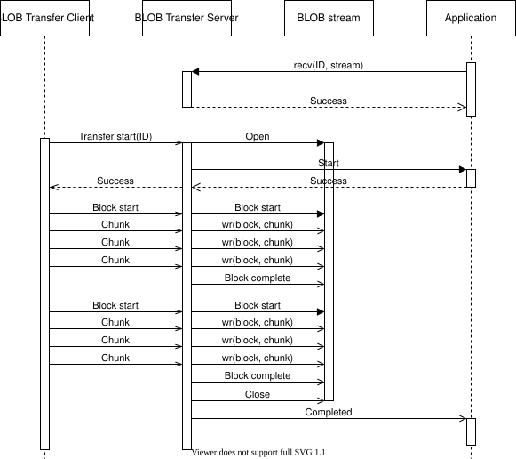

BLOB 传输服务器
二进制大对象（Binary Large Object，BLOB）传输服务器模型实现了对大型二进制对象的可靠接收。它是 固件更新服务器 的后端，但也可以用于接收其他二进制镜像。
BLOB
如 BLOB 传输模型 中所述，BLOB 传输模型传输的二进制对象被划分为块（block），块又被划分为块片（chunk）。由于传输由 BLOB 传输客户端模型控制，BLOB 传输服务器必须允许块以任意顺序到达。块内的块片也可以以任意顺序到达，但必须先收到一个块中的所有块片，才能开始下一个块。
BLOB 传输服务器会跟踪已接收的块和块片，并且每个块和块片只处理一次。BLOB 传输服务器还会确保所有缺失的块片都由 BLOB 传输客户端重新发送。
用法
BLOB 传输服务器在某个元素上实例化，并带有一组事件处理回调：
static const struct bt_mesh_blob_srv_cb blob_cb = {
/* Callbacks */
};
static struct bt_mesh_blob_srv blob_srv = {
.cb = &blob_cb,
};
static const struct bt_mesh_model models[] = {
BT_MESH_MODEL_BLOB_SRV(&blob_srv),
};
BLOB 传输服务器同一时间只能接收一个 BLOB 传输。在 BLOB 传输服务器能够接收传输之前，用户必须先做好准备。在 BLOB 传输客户端启动传输之前，必须通过 bt_mesh_blob_srv_recv() 函数将传输 ID 传给 BLOB 传输服务器。该 ID 必须通过某种更高层的过程（例如厂商自定义的传输管理模型）在 BLOB 传输客户端和 BLOB 传输服务器之间共享。
在 BLOB 传输服务器上设置好传输后，它就可以接收 BLOB 了。应用程序会通过事件处理回调获知传输进度，BLOB 数据则被发送到 BLOB 流。
BLOB 传输服务器、BLOB 流和应用程序之间的交互如下所示：

传输挂起
BLOB 传输服务器在传输期间维持一个运行中的定时器，每收到一条消息就会重置该定时器。如果 BLOB 传输客户端在传输定时器到期前没有发送消息，BLOB 传输服务器就会挂起该传输。
BLOB 传输服务器会调用 suspended 回调通知用户传输已挂起。如果 BLOB 传输服务器正在接收某个块，该块将被丢弃。
BLOB 传输客户端可以通过启动新的块传输来恢复已挂起的传输。BLOB 传输服务器会调用 resume 回调通知用户。
传输恢复
BLOB 传输的状态会被持久化存储。如果发生重启，BLOB 传输服务器将尝试恢复传输。当 Bluetooth Mesh 子系统启动时（例如调用 bt_mesh_init() 时），BLOB 传输服务器会检查是否有被中止的传输，如果有，则调用 recover 回调。在 recover 回调中，用户必须提供一个 BLOB 流，用于传输的剩余部分。如果 recover 回调没有成功返回或没有提供 BLOB 流，该传输将被放弃。如果没有实现 recover 回调，重启后传输总是会被放弃。
传输成功恢复后，BLOB 传输服务器进入挂起状态。它会一直保持挂起，直到 BLOB 传输客户端恢复传输或用户取消传输。
备注
发送该传输的 BLOB 传输客户端必须支持传输恢复，传输才能完成。如果 BLOB 传输客户端已经放弃了该传输，BLOB 传输服务器将保持挂起，直到应用程序调用 bt_mesh_blob_srv_cancel()。
API 参考
- bt_mesh_blob_srv